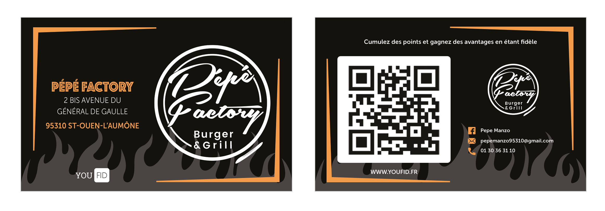
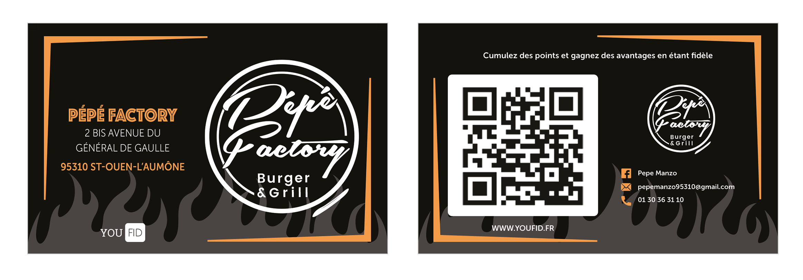
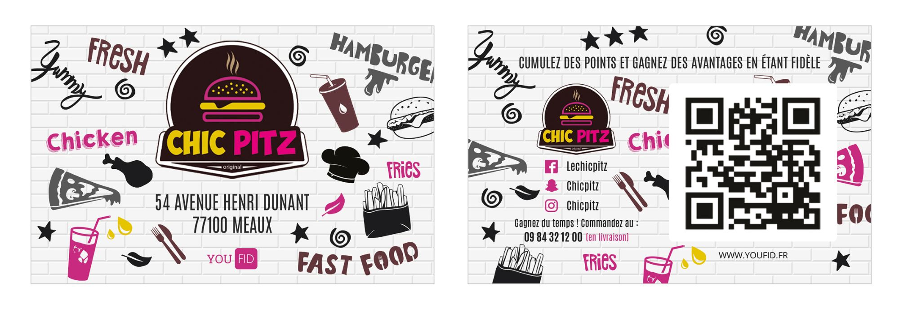
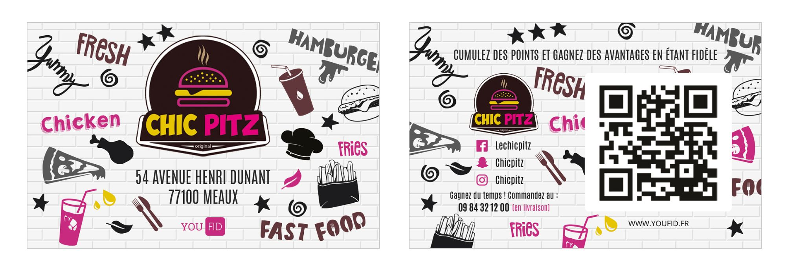
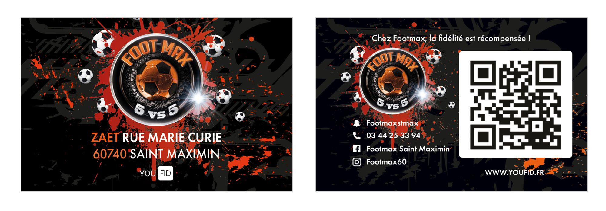
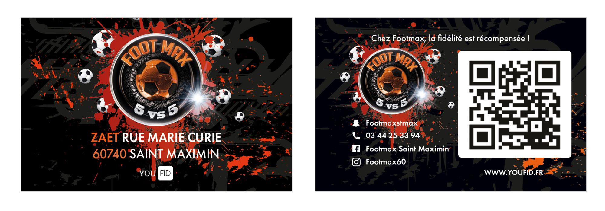

Description
Youfid propose aux commerçants des solutions pour une stratégie de fidélisation client efficiente.
Le cœur du dispositif est donc de proposer une carte de fidélité unique, également disponible sur smartphone, à scanner directement sur la tablette mise à disposition dans les commerces pour profiter de récompenses, recevoir les bons plans, etc.
Mes missions dans l'entreprise étaient les suivantes :
- réalisation de campagnes marketing, de mailing, de newsletters, de chartes graphiques et du design d’application web,
- création de visuels pour les clients,
- support pour les clients,
- élaboration de visuels pour le site web.
Projets réalisés
Visuels clients
Les nombreux clients de YouFID demandaient quotidiennement des newsletters et mailings afin de faire communiquer des événements tel que des soldes, des horaires, des ouvertures de nouveaux magasins, des plats à la carte, des informations concernant la crise COVID...

Cartes de fidélité
Des cartes de fidélité étaient créée pour les clients afin d'y ajouter des informations importantes, tel que leur adresse, numéro de téléphone, mail...
Une fois le design réalisé, il était envoyé à un prestataire qui s'occupait de les créer en version physique. Enfin, les cartes étaient envoyées aux clients.
 

 
 

Logo client
Un client a demandé à ce que son logo soit refait. Situé à Cergy-Pontoise, ce client connaissait YouFID depuis des années. Il nous a alors demandé s'il était possible de refaire son logo qui devenait ancien.